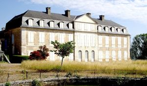
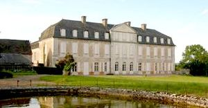
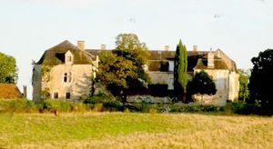
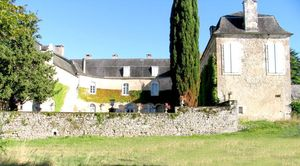
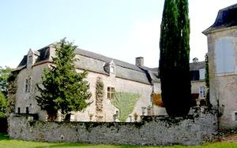

Recensement Jean-Claude Truffet
| Département | 46 — Lot |
| Canton | Gramat |
| Commune | Couzou |
| Type d'édifice | Château |
| Période d'origine | XVII-XVIII |





PANNONIE, en 1183, lorsque le prince Plantagenêt Henri le Jeune, second fils d'Henri au Court Mantel, vint piller Rocamadour avant de mourir à Martel. Cette famille de Saint-Cyr se réfugia chez leur suzerain, seigneur de Thégra; et c'est dans ce fief que le jeune Hugues naquit. D'abord poussé vers une carrière ecclésiastique, il préféra poursuivre une vie de troubadour qui fit sa renommée. Au cours du XIIIe siècle, l'abbaye d'Obazine restructura son organisation autour de Rocamadour. En plus de ces granges aux Alix, elle fit bâtir celle de La Pannonie. Le XIVe siècle voit le causse de Gramat se dépeupler peu à peu. Les mauvaises récoltes ont causé des famines, facilitant les épidémies comme la peste noire. En outre, cette zone frontalière avec l'aquitaine anglaise n'est pas épargnée par les aléas de la guerre de Cent Ans, et les pillages. Après la guerre, l'abbé d'Obazine préféra louer ses domaines. La plupart furent choisis par de riches bourgeois qui construisirent là des repaires, sortes de petits châteaux fortifiés. Ce furent les Lagrange, marchands de Rocamadour et propriétaires du château de la Caretta, qui commandèrent la construction du premier château de la Pannonie. Les travaux ont duré de la seconde moitié du XVe siècle jusqu'au début du XVIe siècle. Les de Lagrange gardèrent leur seigneurie jusqu'au XVIIe siècle, où ils durent la vendre pour éponger leurs dettes. Leurs successeurs, les Vidal de Lapize, transformèrent leur château de façon spectaculaire. Ce chantier fut l'un des plus importants du XVIIIe siècle dans le Lot. Des plans, des croquis venus de Paris inspirèrent l'architecture classique avec fronton central, ainsi que les formes du mobilier de "style Louis XV", et les gypseries de style rocaille. Heureux dans leur agréable château de La Pannonie, les Vidal de Lapize eurent à souffrir de la période révolutionnaire. Ce sont les filles du seigneur qui réussirent à racheter le château, alors que leur père et leurs frères aînés étaient émigrés. Elles bénéficièrent du soutien matériel et humain de leurs fermiers qui protégèrent le domaine durant leur absence; et bien que sérieusement appauvrie, cette famille parvint à maintenir son bien en état. D'autres travaux d'embellissement et de restauration à la fin du XIXe siècle
À la fin du XIXe siècle, Charles de La Pannonie, apporta quelques modifications au château et au parc, faisant notamment installer trois bassins et une grille d'entrée. D'abord une grange monastique servant au défrichement et à la mise en valeur du causse de Gramat au Moyen-Age, et prieuré, les bâtiments sont détruits au cours de la guerre de Cent ans. Ensuite, les nouveaux censitaires élèvent un repaire qui ne semble pas avoir conservé de trace des constructions cisterciennes du XIIIe siècle. Au XVIe siècle, les guerres de Religion entraînent la construction de tours canonnières et les murs furent percés de chambres de tir pour les couleuvrines. Au XVIIe siècle, le château se composait du repaire du XVe siècle et de deux ailes perpendiculaires, au nord et au sud. Au XVIIIe siècle, une aile ouest est édifiée perpendiculairement aux deux autres, et l'aile nord est détruite. L'intérieur conserve un salon au décor du XIXe siècle, ainsi que du mobilier ayant appartenu au maréchal Soult.
Charles de La Pannonie
"
Château de la Pannonie à Couzou